Pour illustrer l'utilisation de MyChronoGPS, on a choisi une configuration ne nécessitant aucune fabrication particulière, soudure ou autre.
Exemple de montage pour des tests
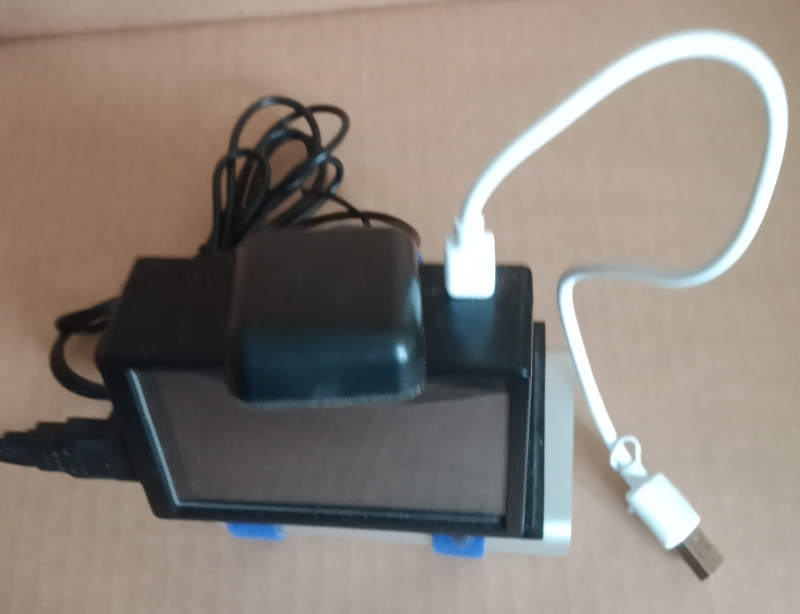
A la mise sous tension Linux démarre
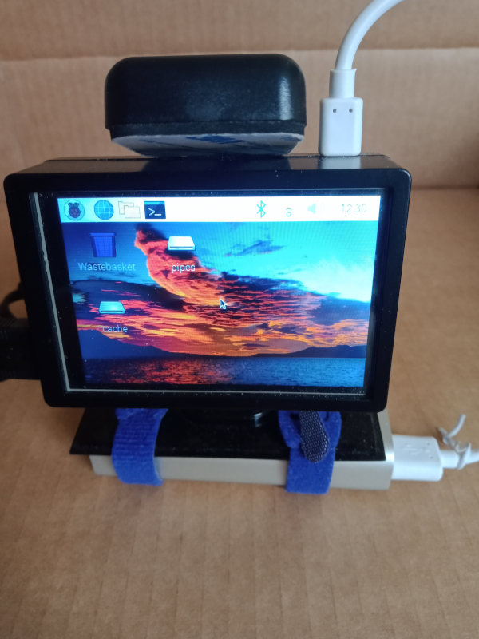
Au démarrage, MyChronoGPS recherche un signal GPS sur le port associé, ici : /dev/ttyACM0.
Si un réseau WiFi est détecté par le RPi, MyChronoGPS indique l'adresse IP où on peut communiquer avec lui.
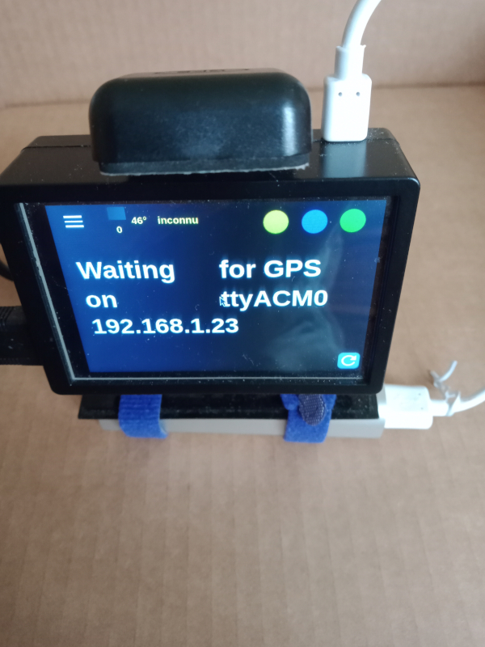
Lorsque MyChronoGPS est fonctionnement, le tableau de bord est affiché.
Le chronomètre démarre automatiquement lorsque la ligne de départ/arrivée est franchie.
Pour çà, MyChronoGPS examine la base de données des circuits.
Dans l'exemple ci-dessous, c'est le circuit d'Alcarras en Espagne qui a été détecté.
Au franchissement de la ligne de départ/arrivée, le temps du tour est indiqué mais avant çà, s'il y a lieu, MyChronoGPS
indique s'il y a un gain ou une perte de temps par rapport au tour précédent.
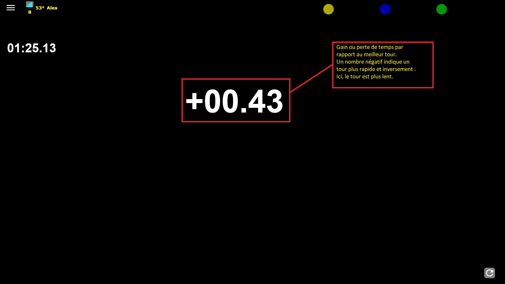
Si des lignes intermédiaires ont été dessinées pour le circuit, MyChronoGPS
indique le temps chronométré du secteur.
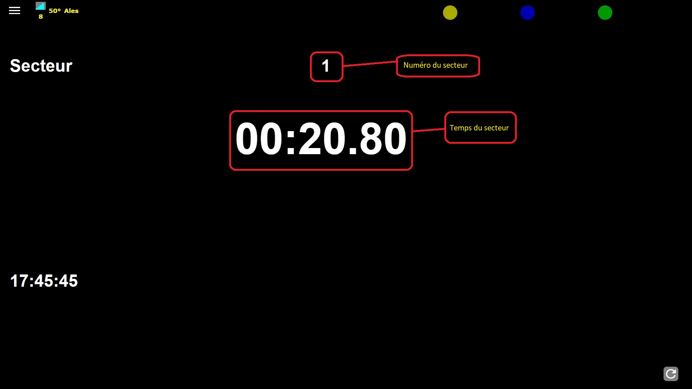
Un menu permet de gérer toutes les données utilisées par MyChronoGPS.
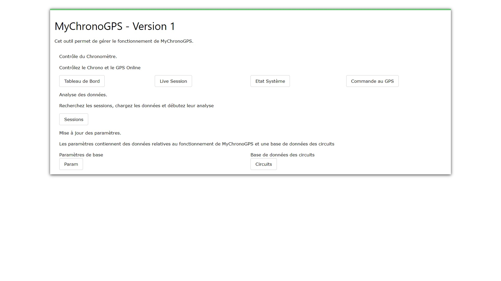
Tableau de bord: Affiche en temps réel l'état du GPS et le chronomètre.
Sessions: application pour examiner les sessions de roulage déjà effectuées et stockées dans MyChronoGPS.
Circuits: application de gestion des tracés des circuits stockés dans MyChronoGPS.
Les circuits peuvent être modifiés, ajoutés mais pas supprimés par l'application (pour l'instant).
Au démarrage de l'application de gestion des tracés, la carte de France est affichée.
Tous les circuits présents dans la base de donnée de MyChronoGPS sont matérialisés par des drapeaux à damiers.
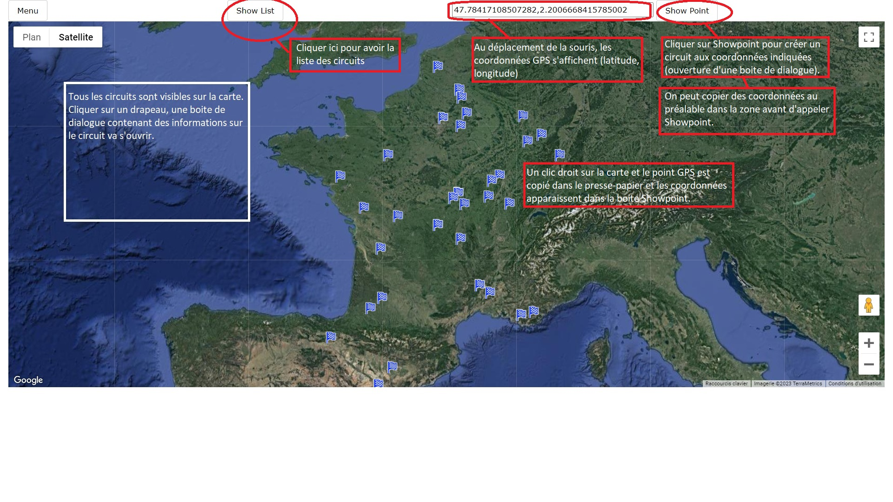
Pour créer un circuit, il faut faire un clic gauche à l'endroit où on veut créer le circuit.
Un clic droit permet de copier les coordonnées GPS du point dans le presse papier (voir exemple).
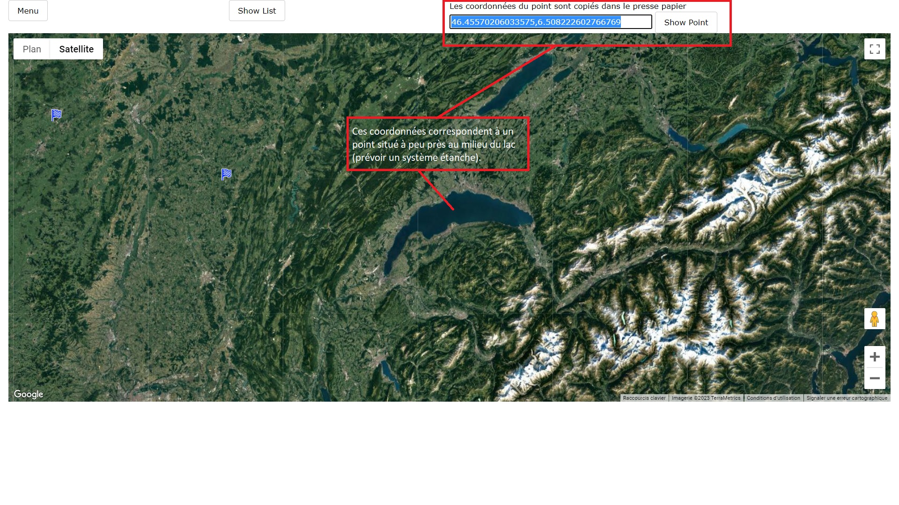
Une boite de dialogue va s'ouvrir pour confirmer la création du circuit à l'endroit indiqué.
Ensuite, MyChronoGPS affiche l'endroit où v être créé le circuit.
Il suffit ensuite de cliquer sur "Nouveau Circuit" pour passer à l'outil de dessin.
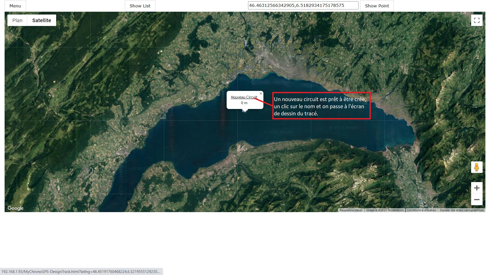
L'outil de dessin s'ouvre à l'endroit du circuit.
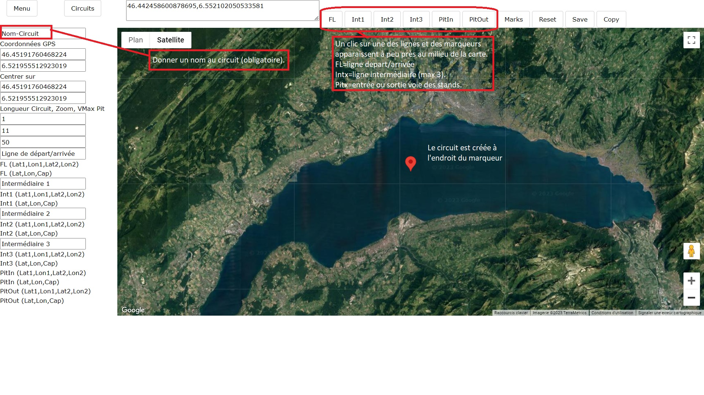
Seules les lignes à franchir sont dessinées sur le circuit, la ligne de départ/arrivée, les lignes intermédiaires
et les lignes entrée/sortie Pitlane.
A minima, seule la ligne de départ/arrivée est requise pour que le circuit soit utilisable par MyChronoGPS.
Pour tracé le segment de droite correspondant à une ligne, il faut appuyer sur le bouton correspondant.
Si la ligne existe, MyChronoGPS se cale dessus, sinon un groupe de 4 marqueurs est dessiné au milieu de la carte.
Tous les marqueurs sont déplaçables et permettent d'ajuster finement le tracé des lignes.
Le marqueur A indique le milieu de la ligne à définir. Lorsqu'on le déplace, c'est l'ensemble des marqueurs qui bougent.
Le marqueur 2 indique le bord de la ligne. Lorsqu'on le déplace, le marqueur opposé (le carré) bouge de telle sorte
que les 2 points soient opposés par le marqueur A qui sert d'axe.
Ainsi, on peut ajuster la largeur de la ligne et son orientation
Le marqueur étoile sert à orienter la ligne plus finement. Lorsqu'on le déplace, la ligne (point 2 + carré) se déplace
de telle sorte que la ligne A-étoile soit toujours perpendiculaire à la ligne en cours de traçage (point 2 + carré).
Le carré permet de déplacer l'ensemble de la carte.
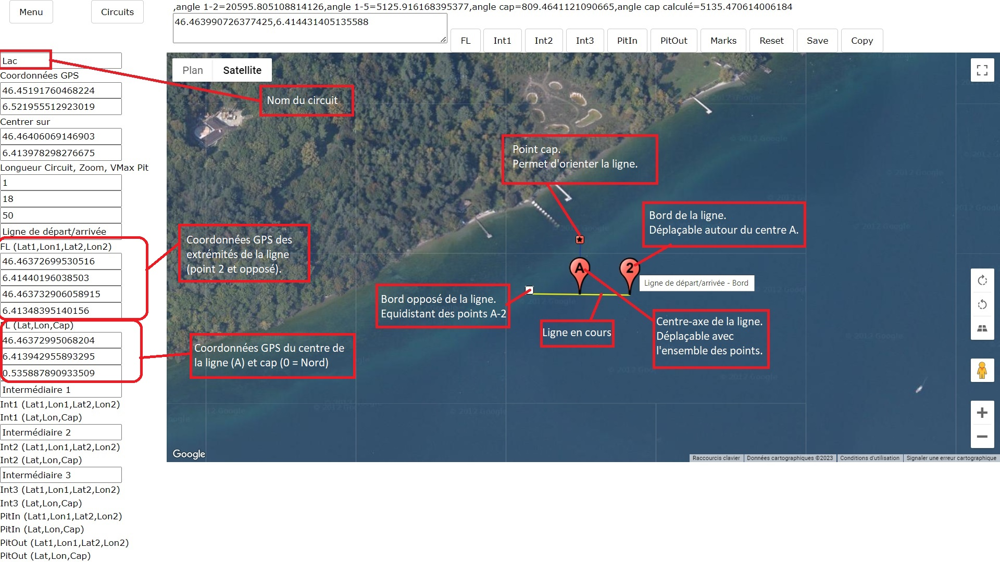
Avant de sauvegarder le travail, il faut indiquer le nom du circuit, en effet, "Nom Circuit" est un nom réservé,
si on ne sauvegarde pas le travail en indiquant un nom de circuit, celui-ci risque d'être perdu s'il y a à nouveau une création de tracé.
Une fois sauvé, si on revient vers la base des circuits, celui-ci apparait dans la liste comme dans l'exemple ci-dessous.
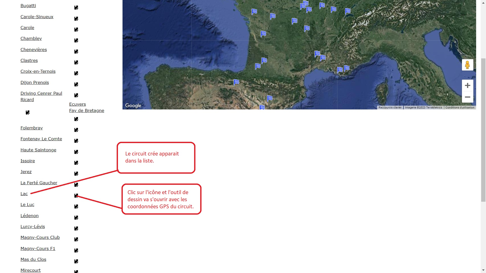
Lorsqu'on affiche un tracé existant, les marqueurs d'aide au dessin ont disparu, il reste seulement les marqueurs d'extrémités de ligne.
Dans l'exemple ci-dessous, seule la ligne de départ/arrivée a été définie.
On voit les marqueurs 1 et 2 et la ligne tracée en noir.
Toujours dans l'exemple, le but du dessin est d'ajouter 2 lignes intermédiaires et les 2 lignes de la voie des stands.
Celles-ci sont visibles avec leurs 4 marqueurs de dessin A, 2, carré, étoile.
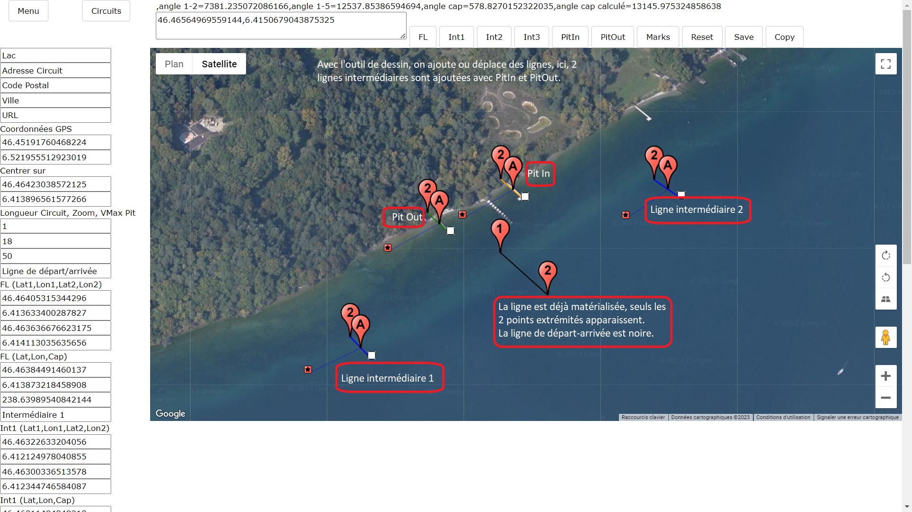
Après sauvegarde du circuit, lorsqu'on rappelle l'outil de dessin, on constate que les marqueurs A, carré et étoile ont disparu.
Chaque ligne apparait avec ses 2 marqueurs d'extrémités uniquement.
Couleur des lignes:
| départ/arrivée | = | NOIR |
| intermédiaire | = | JAUNE |
| entrée pitlane | = | ROUGE |
| sortie pitlane | = | VERT |